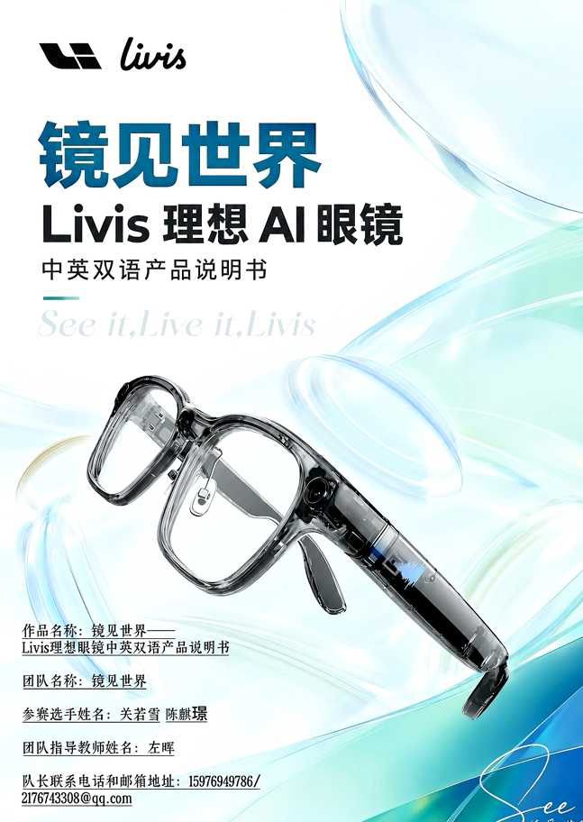
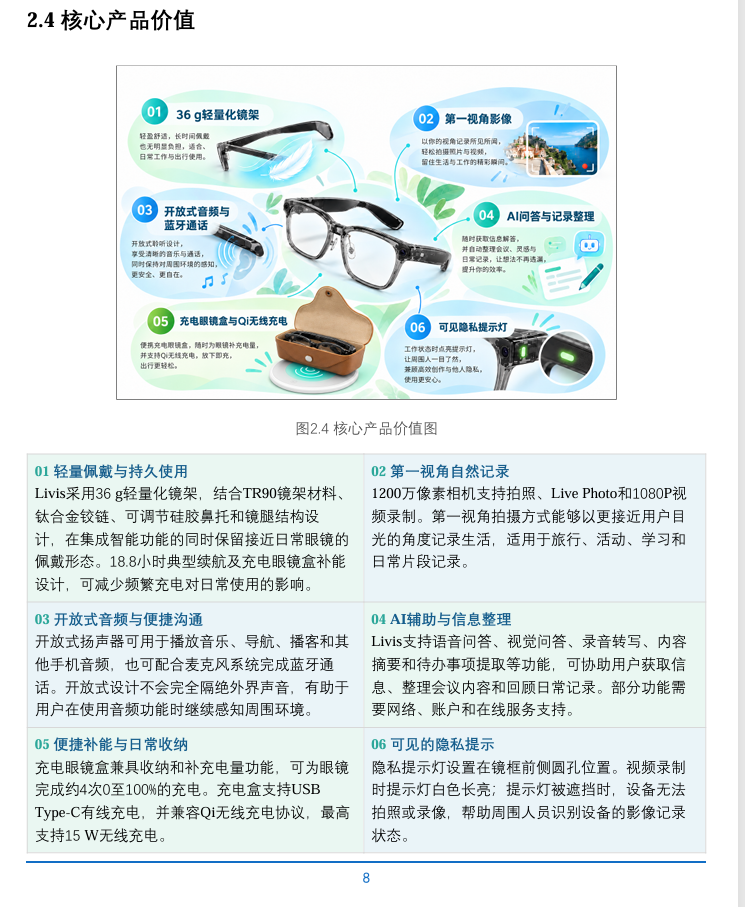
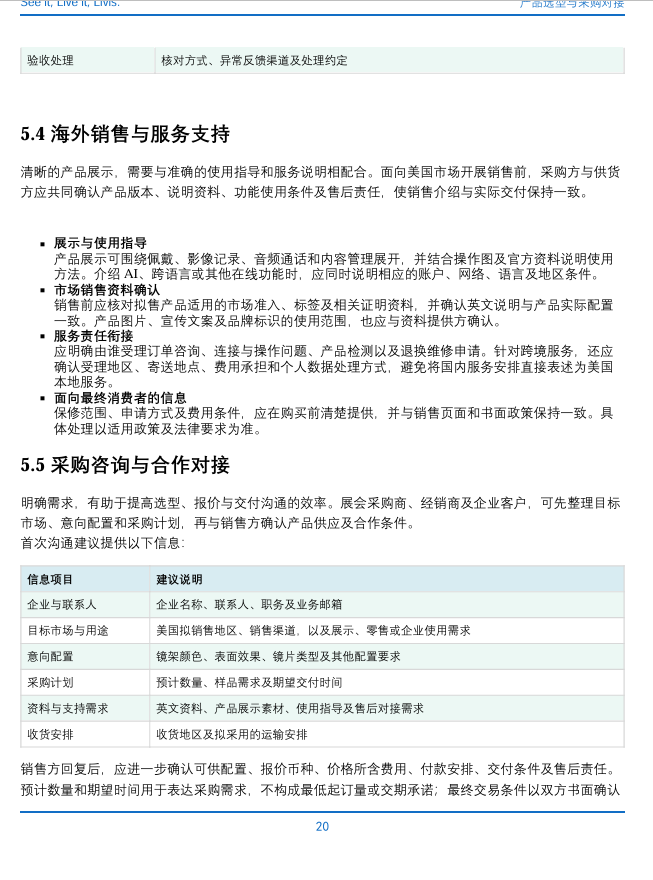
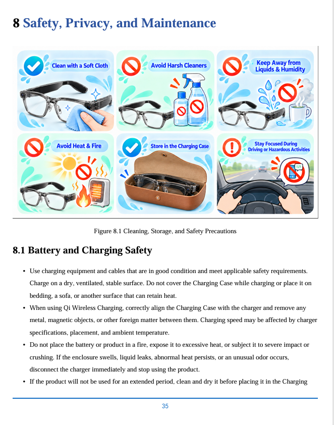

BILINGUAL PRODUCT STORYTELLING
Livis 理想眼镜
让产品信息在中文与英文语境中都清楚可用




01 / 04
项目角色内容架构、双语编写、图表配置与资料核对独立完成
面向美国市场的消费者及采购沟通场景，将产品功能、使用价值、选型条件和服务信息整理为可阅读、可核对的双语说明书。
- 市场与受众：结合传播手册、产品官网及使用场景，梳理美国市场受众对便捷佩戴、随身记录、沟通效率和隐私提示的关注点。
- 产品价值：将 6 项核心产品价值与使用场景对应，解释轻量佩戴、第一视角拍摄、开放式音频、AI 辅助、充电收纳及隐私提示各自解决的问题。
- 功能拆解：整理镜架与镜片配置、相机与音频规格、触控板和记录按键、配套应用及首次使用流程，用图表说明产品结构与操作方式。
- 跨境采购：编写美国市场选型、包装验收、运输交付及海外服务内容，提示采购方确认产品版本、应用兼容性、交互语言、费用分工与售后责任。
- 内容核验：对照官方产品资料核查中英文功能描述，写明部分 AI 与在线功能的使用条件，以及拍摄隐私、安全和服务边界。
项目产出中英双语产品说明书及配套图表；不代表实际销售业绩。